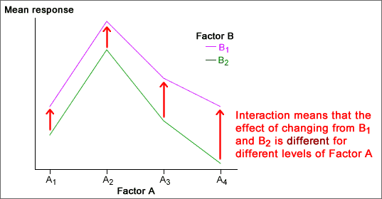

Interaction
If the effect of changing one factor is different for different levels of the other factor, there is said to be an interaction between the effects of the two factors.

An important reason for using a factorial experimental design is that it allows you to detect interaction.
Summarising the results of experiments is usually easier if there is no interaction between the factors. However if interaction exists, it is important that it is discovered and described.